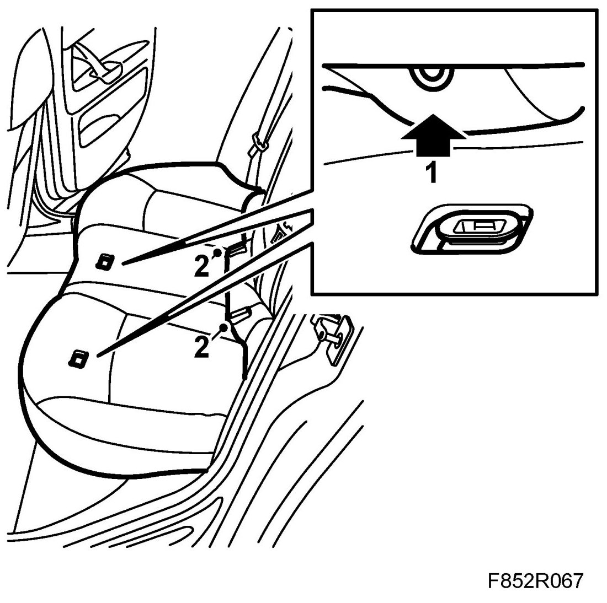
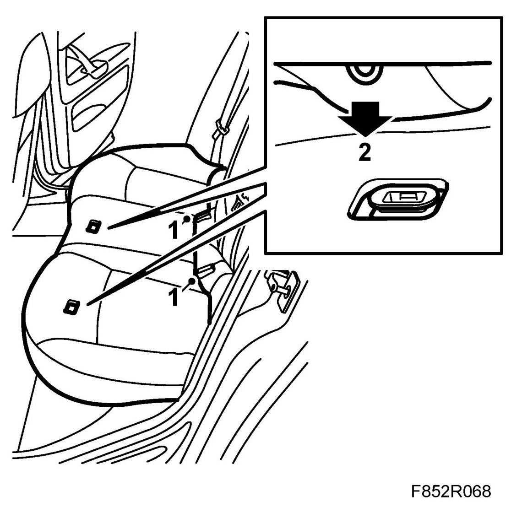

Rear Seat Cushion, 4D, 5D
Rear Seat Cushion, 4D, 5D
Removing
1. Grip the front edge of the seat above the mountings and pull up sharply.

2. Lift the rear seat up and forward so that the seat comes free from the seatbelt buckles.
3. Carefully lift out the rear seat.
Fitting
1. Carefully lift in the rear seat and insert the rear edge of the rear seat under the backrest. Make sure the seatbelt buckles assume the correct positions in the recesses in the rear seat.

2. Lower the front edge of the rear seat and press the seat down above the mounting points.
3. Check that the rear seat is properly fitted.